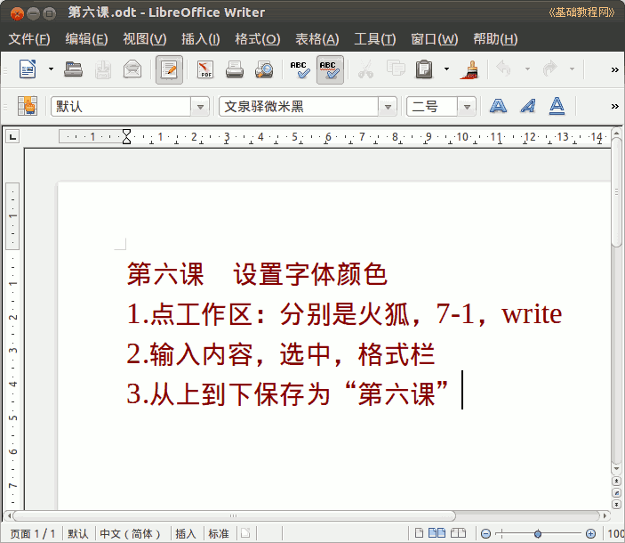

2011-2012 第二学期七年级文字处理和网页教学设计
作者：TeliuTe 来源：基础教程网
六、设置字体和颜色 返回目录 下一课
（一）教学设计
1、学习目标：学会设置字体和颜色，放在不同的工作区里。
2、注意事项：保存和文件夹的操作
3、教学过程：
1）教师准备学案和板书；
2）学生整队进入，开机抄黑板上笔记；
3）教师讲解板书演示操作；
4）学生打指法、日志、完成操作；
5）教师打勾记录学生指法成绩，检查日志和操作；
注：学生抄完笔记就开始打指法、日志，老师讲完后再继续完成；
（二）板书设计(学生笔记)
第6课 设置字体和颜色
1、工作区：分别是火狐、7-1、writer
2、输入内容，选中在格式栏设置
3、从上到下保存为“第6课”
操作图示：

（三）课后记 2012-03-08 17:16
下午七年级的课，学习设置格式
===
第一个班就是来探路的，找找备课的毛病
没有演示，就出现许多问题，这个上回八年级也出现过
--
3班有几个讨厌的，耽误许多没打勾，最后训了一顿
下回得花些时间盯着一下，不然就会惹事弄得都学不好
--
其他几个班都提前要求，防止浮躁
发现问题要及时解决，并且统计下来这样最能说明问题
--
工作区操作还是有些麻烦，点击了不出东西
点快了还会卡，干脆先打开再拖到别扔地方去好了
--
打开两个火狐还有些问题，可以点右键打开新窗口
或者文件新建窗口打开，找个好的方法
--
留学生的事要盯紧，弄得气氛有些异样
好在老师的情绪可以慢慢稳定下来
--
保存的操作先强制记忆从上到下，
要是理解路径位置和文件名也挺好的
--
返回目录 下一课
本教程由86团学校TeliuTe制作|著作权所有
基础教程网：http://teliute.org/
美丽的校园……
转载和引用本站内容，请保留作者和本站链接。